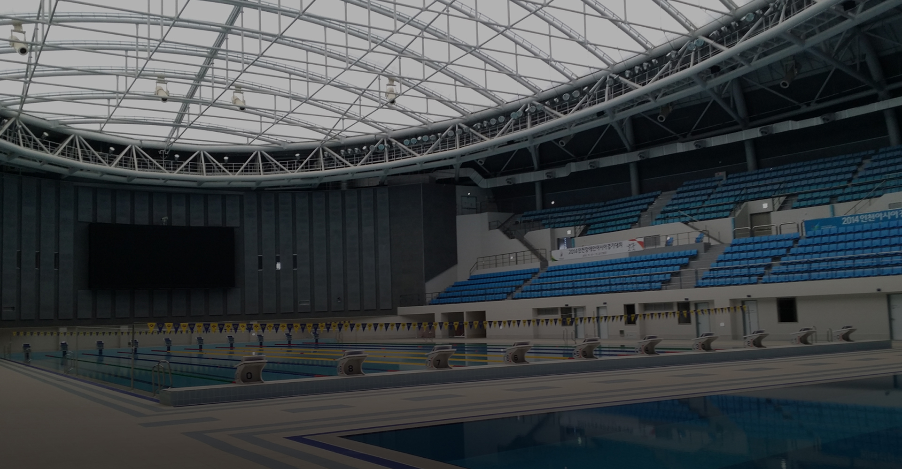
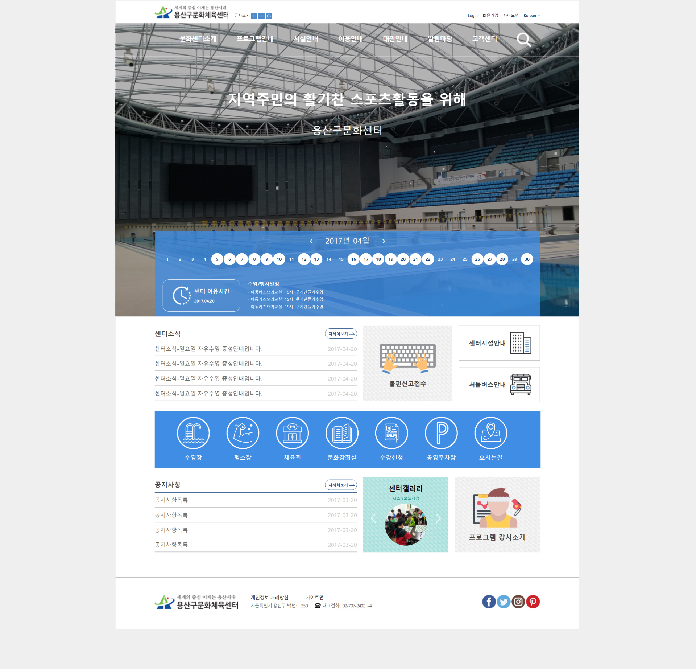

용산구문화체육센터 리뉴얼구축

OVERVIEW
기존의 pc web 플랫폼 리뉴얼과 함께 다양한 플랫폼 개발로 고객 콘텐츠 편의성 및 정보에 대한 접근성 강화에 중점을 두었습니다. 추가로 체육센터만의 브랜드 인지도 향상 및 다양한 기능 강화로 인한 다양한 연령대의 고객 need 충족이 가능한 플랫폼으로 비즈니스 경쟁력 강화에 도움이 될 수 있도록 하였습니다.
용산구 문화 체육센터의 사용 편리함
다양한 연령대가 접속할 수 있는 용산구 문화 체육센터는 브랜드만의 컬러와 이미지를 사용하여 브랜드 아이덴티티를 재정립하였고
기존에 복잡하였던 브랜드 페이지를 편리하게 재 편집 함으로써 고객의 이용의 편리함에 중점을 두었다.
체육센터에서 가장 중요한 센터 이용 시간과 수업 행사와 일정을 사이트에 접속하자마자 한눈에 볼 수 있도록 고객 편의를 강조한 디자인이다.

커뮤니티 기능 강화
용산구 문화 체육센터의 사용자들의 커뮤니티 기능을 강화하여 다양한 용산구 문화 체육센터의 콘텐츠가 사용자의 편리함이 될 수 있도록 하였습니다.